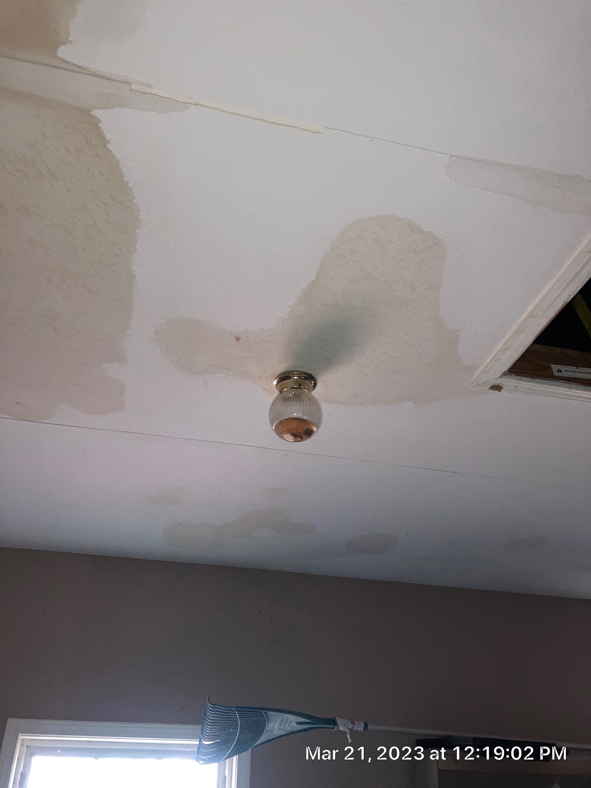
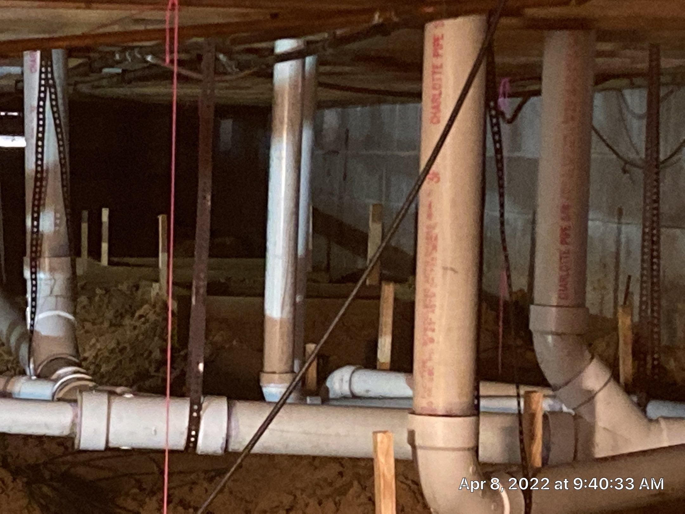
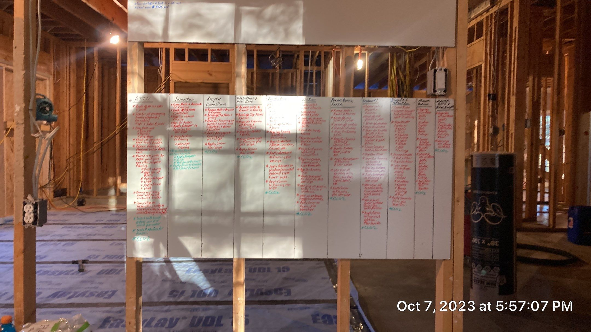

Water Damage Restoration
Inspection, documentation, drying, repairs, and reconstruction following water damage events.
Learn moreCrain Bros Inc provides nine core services to property owners across Northeast Arkansas, backed by more than four decades of local experience.
Crain Bros Inc has served property owners across Northeast Arkansas since 1984. Every service below is delivered with the same documentation-first approach: we record conditions before work begins, during the project, and at completion.

Inspection, documentation, drying, repairs, and reconstruction following water damage events.
Learn more
Full-service construction, rebuild, and remodel work supporting restoration projects and property improvements.
Learn more
Stabilization, documentation, cleanup planning, and rebuild after fire and smoke damage events.
Learn more
Whole-home and commercial remodels with documentation-first workflow and trade coordination.
Learn more
Plumbing services as part of restoration and construction projects across Northeast Arkansas.
Learn more
Condition assessment, scope verification, and documentation supporting restoration and construction planning.
Learn more
Waterproofing services to prevent intrusion, support restoration projects, and protect property structures.
Learn more
Professional consulting for property restoration planning, scope review, and construction coordination.
Learn more
Restoring property structures to functional and stable condition following damage or aging.
Learn moreEvery project begins with an assessment of the property and a written record of existing conditions. From there we identify what was damaged, what caused it, and what has to happen to return the property to a sound, functional condition.
We document the work as it progresses. Photographs, condition notes, and scope records are kept throughout the project so the property owner always has a clear account of what was found and what was done.
We respond 24 hours a day. Water intrusion, fire damage, and storm damage do not wait for business hours, and neither do we.
We serve Jonesboro and the surrounding Northeast Arkansas region, including Brookland, Bono, Paragould, Blytheville, Harrisburg, Newport, Trumann, Bay, Lake City, Monette, Caraway, and Gosnell.
Yes. Crain Bros Inc is open 24 hours a day and provides emergency response services. Call (870) 935-6019 at any hour.
Crain Bros Inc is a family owned company that has served Northeast Arkansas since 1984.
Yes. Crain Bros Inc is a licensed and insured contractor operating out of Jonesboro, Arkansas.